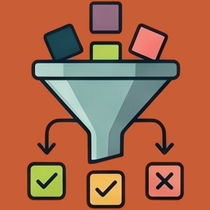

Building Agents on Fullsend
From ADLC Workflows to Autonomous Software Development
A practical introduction for engineers building agents on the platform and contributing to it.

the boundaries that make autonomy usable
From mental model to contribution path
We will connect the agent-building surface to the controls that make autonomous development trustworthy.
Fullsend turns repository events into bounded agent work
The forge remains the system of record. Fullsend supplies the machinery that turns repository state into controlled execution.
Repository state
Events and policies already live where the work is visible.
Controlled execution
Reason and act
A model uses the tools and context the harness makes available.
One agent run is a set of nested boundaries
Each outer layer prepares and constrains the layer inside it. The runtime never owns the boundary around itself.
The sandbox operates without broad external credentials.
Filesystem and network policy limit the blast radius of a task.
Only checked and extracted output crosses back to the forge.
The repository coordinates the agents
Agents work independently. The repository makes their work visible, comparable, and subject to deterministic merge rules.
The harness defines the agent
A harness connects the agent’s behavior to the environment, lifecycle, dispatch path, and authority it needs to run.
Behavior
What the runtime is asked to do
Execution environment
Where the agent can work and what it can reach
harness/my-agent.yaml
The harness turns a generic runtime into a specific Fullsend agent.
role: coder
trigger: event.entity.kind == "work_item"
pre_script: scripts/pre-agent.sh
post_script: scripts/post-agent.sh
Lifecycle
What happens before, during, and after the runtime
Dispatch
When this harness should be selected
Identity
Which authority the run receives
Base and overlays resolve one harness
Base harnesses provide lineage. Overlays add conditional deltas for the event, forge, runtime, or repository.
base harness
Shared upstream definition
policy: policies/base.yaml
skills: [review, tests]
local child harness
Repository-owned changes
skills: [team-linting]
timeout_minutes: 45
matching overlay
Apply only when its condition is true
skills: [jira-context]
pre_script: scripts/pre-jira.sh
another matching overlay
Later matches can refine the result
providers: [providers/github]
post_script: scripts/post-gh.sh
resolved harness
The runner sees one concrete agent definition after inheritance and context are applied.
The harness controls the run lifecycle
The harness turns one event into a bounded sequence of preparation, reasoning, validation, and repository-visible output.
Runner before
Deterministic setup outside the sandbox
Sandbox runtime
The model works inside the configured environment
Check structured output. If it fails, return bounded feedback for another iteration.
Runner after
Apply only the checked result
One harness crosses several integration surfaces
Fullsend adapts source events, change systems, workflow hosts, and agent runtimes around the same harness contract.
One harness
The agent definition and lifecycle stay recognizable while the surrounding adapters change.
role: scoped authority
runtime: selected backend
integration: selected adapter
Event and work-item sources
What starts the run
Change trackers and forges
Where PRs and MRs live
Workflow hosts
Where dispatch runs
Agent runtimes
What performs the loop
Trust is a chain of separate decisions
An authenticated agent can still process hostile content. Safe execution comes from deciding identity, input trust, and authority separately.
Who is acting?
Agent roles and GitHub App installations make actions attributable and allow permissions to be scoped by role.
What did it read?
Issues, comments, pull requests, and agent output remain untrusted input, even when they came from a known repository.
What can it do?
Sandbox policy, credential scope, network rules, and repository gates constrain the blast radius of a run.
Credential delivery depends on the service
Fullsend uses different boundaries for different integrations. Some runs have no runtime credential; others receive a scoped token or a real credential file.
Inputs arrive before the run. A host-side step applies the result afterward.
The runtime carries an opaque placeholder. The gateway resolves the credential at the allowed endpoint.
File-based auth can enter the sandbox. Network policy becomes the hard security boundary.
A scoped API mediates operations the provider model cannot express.
Agent runtime
One runtime, several credential shapes.
Workflow provenance gates credential exchange
A consumer repository can trigger Fullsend without becoming a trusted minting workflow host.
Consumer repository
Thin shim forwards event context and invokes the reusable workflow.
role: caller
Allowed workflow host
Upstream Fullsend or an explicitly trusted workflow repository supplies the credential-bearing code.
fullsend-ai/fullsend/...
GitHub OIDC claims
The exchange carries workflow provenance, repository identity, audience, and expiry.
Mint WIF
OIDC is exchanged for a role-scoped GitHub App installation token.
GH_TOKEN · PUSH_TOKEN · REVIEW_TOKENInference WIF
The same job identity follows a separate provider path for Vertex or OpenAI access.
ADC file · run-scoped provider · L7 egressMinted authority is bounded twice
WIF authorizes a workflow to request a token. The mint limits the token, and the repository still decides whether the result can merge.
OIDC claims
Verified issuer, audience, repository, and workflow provenance.
Token mint
Checks caller, role, level, installation, and requested repositories.
Capability envelope
Runtime action
Read, edit, test, comment, or push within the granted capability.
Repository gate
Required checks, CODEOWNERS, and branch protection decide whether state advances.
Event sources converge on one dispatch pipeline
New inputs adapt at the edge. Authorization, harness selection, routing, and execution stay on the shared path.
Current entry paths
Low-latency events and scheduled change detection enter through the same boundary.
NormalizedEvent
Forge-specific input becomes one event shape before routing.
Shared dispatch core
Central policy and routing keep input adapters small.
Start the run
The selected harness keeps the existing `fullsend run` contract.
A new runtime adapts to small contracts
The runner owns the boundary. Each runtime translates the shared contract into its native configuration and hook mechanism.
runtime.Runtime + BootstrapInput
Per-agent runtime, model, and effort resolve above the shared execution boundary.
Claude Code
Renders the runner’s hook plan into its settings and instruction surfaces.
settings.json
claude -p --agent
pi
Uses its own extension and configuration path while keeping the same sandbox policy.
fullsend-hooks.js
pi --print --mode json
Codex
Maps the shared security hooks and provider path into Codex’s native configuration.
hooks.json
codex exec --json
Custom agents extend behavior below the role boundary
Agent behavior can grow inside an existing authority envelope. Shared role permissions should grow only under a separate admission bar.
Generate, register, test
The CLI creates a complete, valid starting point instead of leaving plumbing to memory.
--role triage
Existing served role
The mint binds the role to a shared permission ceiling and named levels.
Output first, control-plane later
Agent runs produce inspectable artifacts. The caller owns any broader follow-up action.
Contributor permissions grow with evidence
Fullsend turns contribution history into a measured path toward wider repository authority.
Vouched
Submit code, docs, and tests from your own fork.
Triage
Shape issue state and trigger observation agents.
Write
Change non-protected branches and run mutation agents.
Maintainer
Approve, authorize CI, and merge under CODEOWNERS.
Advancement is earned
Each step combines contribution history with a deliberate approval bar.
From merge to a per-repo run
A merge changes source. A release changes stable references. A workflow run selects what users actually execute.
Merge to main
Moving consumers can observe the new commit on a later run.
Tag vX.Y.Z
Fullsend starts the release workflow and agents gate.
Validate agents
Functional tests run against the Fullsend release ref.
Move Fullsend v0
GoReleaser publishes the CLI; stable v0 advances.
Tag agents
The gate-validated agents SHA receives vX.Y.Z and v0.
Target repository
The per-repo caller and effective config select the run.
.fullsend/config.yaml
.fullsend/config.base.yaml
Non-vendored resolution
Each input can point at a different source revision.
reusable workflow code
CLI binary, fallback build from ref
local path or remote SHA plus #sha256
Impact on users
moving development behavior
latest stable on the next run
unchanged until the repo ref moves
Architecture decisions have a durable path
Problem documents explore the space. ADRs record the decision. Living architecture carries the current truth.
Problem space
Describe the need before selecting an implementation.
Accepted ADR
Freeze the context, decision, and consequences as a point-in-time record.
Living architecture
Update the current system description so contributors can work from one truth.
Human contribution
ADR and implementation may share a PR when the decision is settled.
Agent contribution
Keep the ADR and implementation in separate reviewable PRs.
When the decision changes
Preserve the history and make the new decision explicit.
Fullsend and agents use different evidence lanes
The repositories meet at release time, but each suite answers a different question.
Go tests
Pure functions, interfaces, and package behavior.
Behaviour
Dispatch, harness, sandbox, and SCM state.
Admin e2e
Installation, mint, and real pool infrastructure.
Functional
Full agent pipeline against ephemeral fixtures.
Script tests
Pre-script and post-script contracts.
Agent fixtures
Known cases and expected outcomes.
Functional evals
Judges, scores, and behavioral thresholds.
Release gate
Validated agents SHA becomes the tag.
Behaviour tests remove inference
They exercise deterministic platform behavior while keeping the model layer out of the assertion.
Gherkin scenario
User-visible event and expected state.
Dispatch and workflow
Routing, harness selection, and workflow execution.
Dummy runtime
Scripted operations replace inference with deterministic behavior.
Forge state
Real GitHub or GitLab and CI drivers verify the result.
What this proves
The control plane enforces its contract without depending on model variance.
E2E tests exercise the installed system
The test reaches across installation, identity, minting, workflows, and a real repository.
Test actor
Write, triage, or outsider permissions model the caller.
Pool organization
An isolated repository is acquired for the test.
OIDC and mint
Short-lived role-scoped authority is issued for the run.
Installed workflow
GitHub Actions performs the operation and exposes the final state.
Why it costs more
E2E tests verify the seams that unit and behaviour tests intentionally abstract away.
Functional tests observe the full agent pipeline
The agent runs against an ephemeral fixture, then judges inspect both quality and side effects.
Before each case
Create the ephemeral repository and fixture.
Fullsend run
Pre-script, sandboxed agent execution, and post-script.
After each case
Capture fixture state and remove the temporary repository.
Threshold gate
Compare scores, side effects, turns, and cost against the case contract.
Evidence leaves the run
Functional tests make agent behavior inspectable without treating a transcript as the only result.
Agent evals score quality and regression
Curated cases turn prompt and model changes into a measurable comparison.
Case fixture
Input, repository, annotations, and expected behavior.
Agent run
The same agent pipeline produces an observable result.
Score
Judges compare quality, state, efficiency, and cost.
The development loop keeps evidence beside the change
A green PR should establish the contract for the slice it changes and exercise that contract before merge.
Slice the change
Keep the implementation, config, and user-visible behavior together.
Deploy exact source
Use `go run` from the checkout and `--vendor` for unreleased workflow testing.
Run matching evidence
Add behaviour or e2e coverage with the functionality it protects.
Merge the proven slice
Keep refs, docs, and tests aligned with the change.
Practical shortcuts
Make the path from a local change to a trustworthy run short and repeatable.